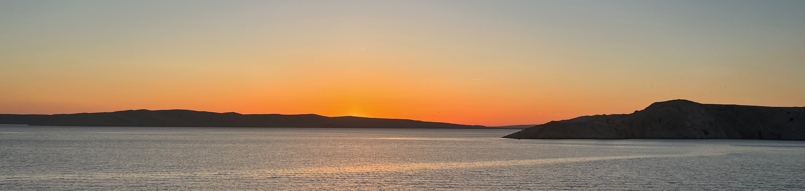

Asien

Asien, der größte Kontinent der Erde, ist ein faszinierendes Land der Kontraste und Vielfalt. Von den schneebedeckten Gipfeln des Himalaya bis zu den tropischen Stränden Südostasiens erstreckt sich Asien über eine enorme geografische, kulturelle und historische Bandbreite.
Geographisch ist Asien äußerst vielfältig. Es umfasst Wüstenlandschaften wie die Gobi in der Mongolei, dichte Regenwälder wie den Amazonas in Südostasien und fruchtbare Ebenen wie die des Ganges in Indien. Der Kontinent beherbergt auch einige der höchsten Berge der Welt, darunter den Mount Everest und den K2.
Asien ist auch die Heimat einer reichen kulturellen Tradition, die sich in einer Vielzahl von Sprachen, Religionen, Küchen und Traditionen widerspiegelt. Von den prächtigen Tempeln Indiens über die zen-buddhistischen Gärten Japans bis hin zu den farbenfrohen Festivals in Thailand bietet Asien eine Fülle von kulturellen Erfahrungen.
Die Geschichte Asiens ist ebenso reichhaltig wie seine Landschaften und Kulturen. Der Kontinent war die Wiege einiger der ältesten Zivilisationen der Welt, darunter die mesopotamische Zivilisation im heutigen Irak und die Indus-Zivilisation in Pakistan. Über die Jahrhunderte hinweg hat Asien zahlreiche Reiche und Imperien gesehen, die die Geschichte der Menschheit geprägt haben.
Heute ist Asien ein wirtschaftlicher und politischer Knotenpunkt, der einen Großteil des globalen Handels und der Produktion ausmacht. Länder wie China, Japan, Indien und Südkorea spielen eine entscheidende Rolle in der Weltwirtschaft und beeinflussen das geopolitische Gleichgewicht.
Insgesamt ist Asien ein faszinierender Kontinent, der mit seiner Vielfalt an Landschaften, Kulturen und Geschichte beeindruckt. Von den Wolkenkratzern der Metropolen bis zu den abgeschiedenen Dörfern in den Bergen bietet Asien eine unvergleichliche Mischung aus Tradition und Moderne.